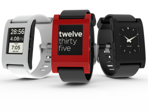
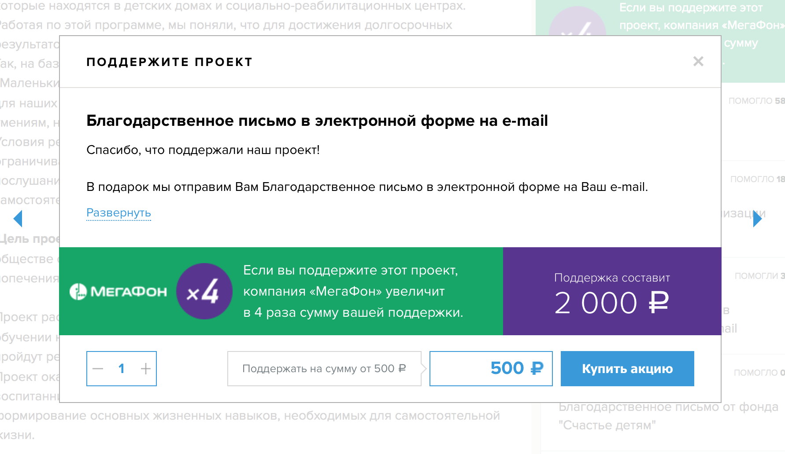

Краудфандинг — весьма молодое явление не только в России, но и в мире. Его появление — одно из следствий вхождения интернета в нашу жизнь. Именно с приходом интернета у информации появилась возможность распространяться мгновенно, а, используя электронные платежи, принять участие в краудфандинге может практически любой.
Краудфандинг — это способ собрать деньги с большого количества людей, на интересный людям проект. Несмотря на схожесть с благотворительностью, у краудфандинга есть принципиальное отличие. Инвестирующие в проект посредством классического краудфандинга люди — благотворители во вторую очередь, в первую — они инвесторы. Если проект набирает достаточное количество инвестиций, то он реализуется инициатором, а инвесторы получают взамен какое-то вознаграждение.
Удобнее всего привлекать внимание к краудфандинговым проектам с помощью специальных платформ.
Самая известная в мире, пожалуй, Kickstarter. Именно на кикстартере в 2012 году компания Pebble Technology собрала с инвесторов более 10 миллионов долларов на умные часы Pebble. Эта сумма более чем в 100 раз превысила ту, которую изначально собирались собрать авторы проекта.

В России сегодня действует несколько подобных платформ:
Boomstarter — российский аналог кикстартера. Проекты разноплановые. Например в 2013 году на съёмку фильма о 28 панфиловцах почти 4000 человек пожертвовали более 3 миллионов рублей, что в 10 раз больше того, что требовалось инициаторам проекта.
Kroogi помогают найти спонсоров творческим людям — музыкантам, художникам, писателям.
Planeta.ru — одна из старейших краудфандинговых платформ, в которой, помимо привычных творческих проектов, представлено большое количество благотворительных проектов и гражданских инициатив.
Именно посредством этой платформы компания «МегаФон» реализует часть своей обширной благотворительной программы, которая включает и проект благотворительного фонда «Счастье детям».
Принцип участия МегаФона заключается в том, что компания не просто отдаёт деньги на благотворительность. Она увеличивает собранную простыми участниками сумму в 4 раза.
Краудфандинговый проект благотворительного фонда «Счастье детям», одним из учредителей которого я являюсь, называется «Учимся жить». Мы довольно давно сотрудничаем с детским реабилитационным центром «Маленький принц» в Кемерове и, реализовав этот проект, мы сможем помочь детям социализироваться во взрослой жизни. Попавшие в реабилитационный центр подростки будут учиться готовить себе обед, делать покупки в магазине, разберутся с основами домашних финансов.
Сбор денег заканчивается 17 августа и на момент написания этого текста уже собрано 881120 рублей, включая 660840 рублей, которые добавит компания МегаФон.

Таким образом для реализации проекта, нам остаётся собрать всего 90220 рублей.
Принять участие в проекте может каждый. Для этого достаточно пройти несложную регистрацию и сделать любой взнос.
Спасибо.